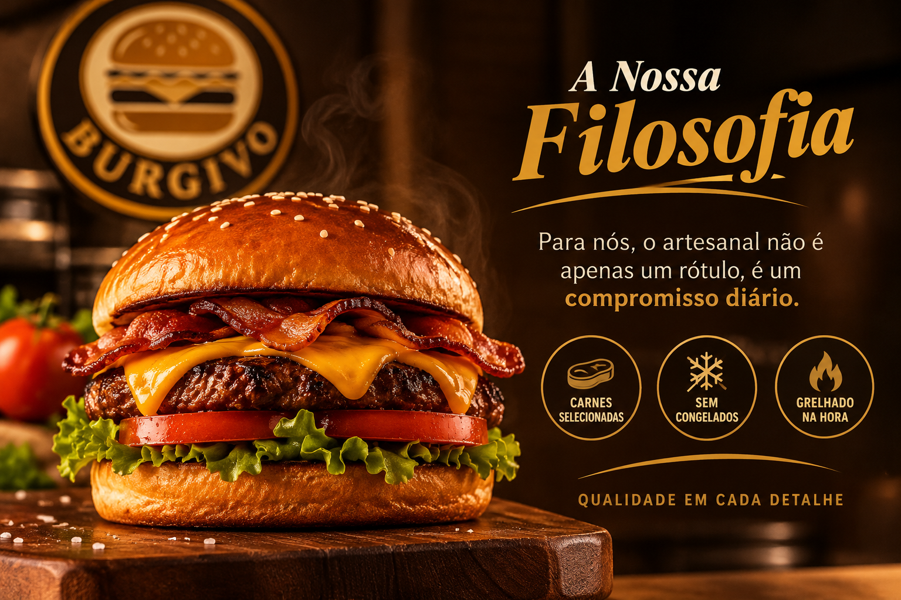

Nossa História
Tudo começou com uma obsessão simples: fazer um hambúrguer de verdade, sem atalhos. Cansados dos processos industriais e dos lanches congelados, decidimos resgatar a essência da gastronomia artesanal em São José dos Campos. O que começou na cozinha de casa, testando combinações de blends, selagens de pães e tempos de chapa, transformou-se no nosso propósito diário: entregar uma experiência memorável em cada pedido.
A Nossa Filosofia

Para nós, o artesanal não é apenas um rótulo, é um compromisso diário. Não usamos carnes ultraprocessadas nem ingredientes prontos. Tudo aqui é preparado à mão, do blend de carnes selecionadas ao molho especial da casa.
Acreditamos que o segredo de um grande burger está na simplicidade executada com perfeição: a técnica Smash que garante aquela crosta dourada e suculenta, o pão brioche sempre macio e selado na manteiga, o queijo no ponto de derretimento ideal e o bacon bem crocante.
Nosso compromisso
Artesanal
Sem congelados
Grelhado na hora
Moldamos nossas carnes todos os dias. Nada entra no freezer.
Cada burger é grelhado na hora, garantindo o máximo de sabor e suculência.
Do momento em que acendemos a chapa até a entrega na sua porta, cuidamos de cada detalhe.